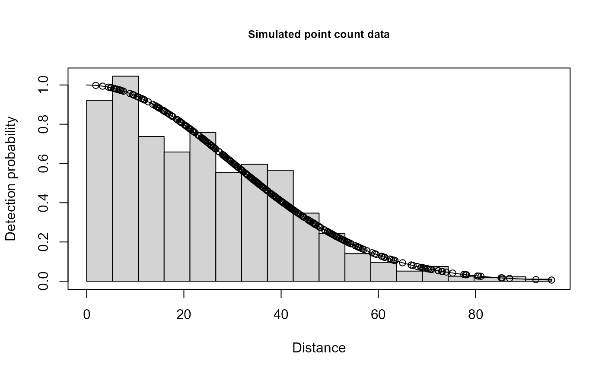

Simulated single observer point count data with detection p(0)=1; hn sigma=30; w=100
Format
The format is 341 obs of 4 variables: ..$ distance: numeric distance from center $ observer: Factor w/ 2 levels "1","2": 1 2 1 2 1 2 1 2 1 2 ... ..$ detected: numeric 0/1 $ object : sequential object number
Examples
# \donttest{
data(ptdata.single)
xx=ddf(dsmodel = ~cds(key="hn", formula = ~1), data = ptdata.single,
method = "ds", meta.data = list(point=TRUE))
#> Warning: no truncation distance specified; using largest observed distance
summary(xx)
#>
#> Summary for ds object
#> Number of observations : 341
#> Distance range : 0 - 95.62823
#> AIC : 2928.884
#> Optimisation : mrds (nlminb)
#>
#> Detection function:
#> Half-normal key function
#>
#> Detection function parameters
#> Scale coefficient(s):
#> estimate se
#> (Intercept) 3.397033 0.02984984
#>
#> Estimate SE CV
#> Average p 0.1940384 0.0112283 0.05786639
#> N in covered region 1757.3842381 132.8196911 0.07557806
#> EDR 42.1240314 1.2187829 0.02893320
plot(xx,main="Simulated point count data")

# }